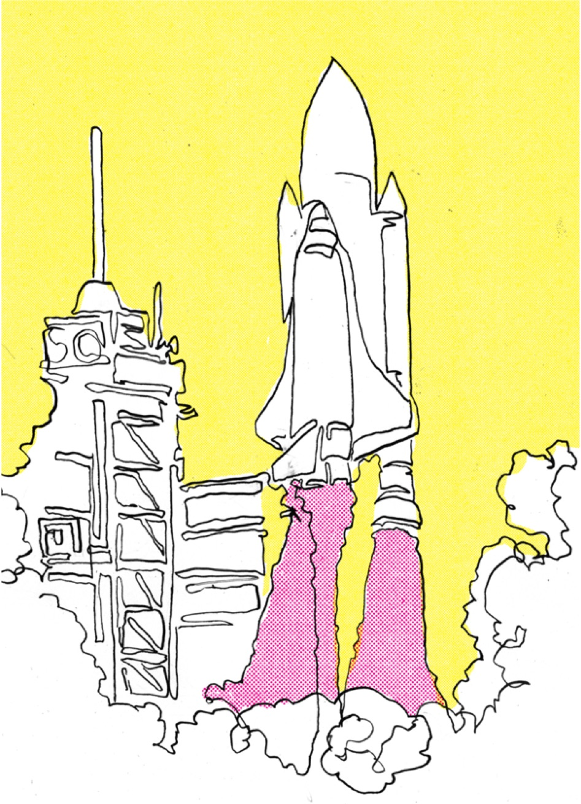

Kapitel 14
Play it forward - again
Ta vår playbook in i framtiden – en inbjudan till fortsatt utforskande
Det här är nu inte ett slut bara för att vi strax når bokens slut. Det är en början på nya frågor, nya försök, nya samarbeten och nytt lärande. I det här avslutande kapitlet bjuder vi in dig som läsare att bli medskapare – att ta med dig drivkrafterna, berättelserna och idéerna ut i din egen verklighet. Vi började det här arbetet som ett projekt, men ganska snart blev det något mer. En rörelse, en väv av människor som på olika sätt delar samma övertygelse: att lärande är något vi skapar tillsammans. Du är nu en del av samma rörelse och du kan när du vill återkomma till playbooken när du behöver ny fart, nya tankar eller nya lekplatser.
Genom möten, workshops och samtal har vi sett hur mycket kraft som frigörs när lärande inte längre betraktas som ett individuellt ansvar, utan som en gemensam praktik. När kunskap inte ska konsumeras, utan samskapas. När nyfikenhet inte är en privat känsla, utan en smittsam våg.
Play it forward betyder att föra något vidare. I vårt fall handlar det om att bära med sig lärandets drivkrafter in i nya miljöer – till skolor, organisationer, förvaltningar, kulturscener, och nätverk.
Och att där fortsätta experimentera, testa, reflektera och justera. Det handlar om att skapa fler platser där lärande känns meningsfullt, på riktigt.
För vi har gång på gång sett att lärande inte händer för att någon bestämmer att det ska ske. Det händer när människor vill och kan vara med. När strukturerna runt omkring tillåter utforskande, när ledarskapet skapar utrymme för osäkerhet, när det finns plats att misslyckas utan att tappa värdighet.
Det händer också när någon rätt och slätt börjar. När en person i ett team bestämmer sig för att prova en ny form, ställa en annan fråga eller byta perspektiv. När någon väljer att dela med sig av sina egna lärdomar, eller på samma sätt frågar någon om det man behöver lära sig, i stället för att vänta på en kurs. Möjligheterna och tillvägagångssätten är oändliga, om vi öppnar upp för dem.
Vi i det här projektet har nu ännu mer kunskap genom såväl kunskap som praktik, om att det inte finns ett enda rätt sätt att skapa vare sig individuellt lärande eller lärande organisationer. Men det finns vissa mönster, vissa återkommande förutsättningar som öppnar dörren till det vi vill åstadkomma. Genom alla våra möten, reflektioner, intervjuer och AI-bearbetningar har våra fyra drivkrafter återkommit, oavsett bransch, ålder eller sammanhang.
Det är dessa vi nu lämnar vidare till dig – som en karta, som inspiration och som inbjudan till en fortsättning. På nästa sida följer som inspiration till det, en sammanställning av vad människor över hela landet har delat med oss, hur de själva beskriver sina erfarenheter av lärande, nyfikenhet och mod. Håll till godo och lycka till med ditt eget lärande och det du kan designa för andra!
Samlade lärdomar om lärandets drivkrafter – mönster och nyanser
I flera olika sammanhang – från skolor och företag till öppna nätverk – har vi utforskat vad som faktiskt får människor att vilja lära. Vi utgick från våra fyra drivkrafter: nyfikenhet, inre motivation, framplockning och psykologisk trygghet. Vi har testat dem i olika miljöer, i workshops och samtal, i organisationer, skolor och nätverk. Deltagarna har fått reflektera över hur drivkrafterna visar sig i deras vardag, de har fått spela in sina tankar och berättelser och i vissa fall har vi låtit AI-verktyg analysera och gruppera deras svar.
Så har ett rikt material vuxit fram – en slags kollektiv karta över hur människor faktiskt upplever lärande. Genom att bearbeta allt detta, både manuellt och tematiskt men också med stöd av AI, började vissa mönster framträda. De säger något både om vilka förutsättningar som väcker lärande och vilka hinder som får det att stelna.
Det finns en tydlig samstämmighet mellan forskningen och människors egna berättelser: lärande drivs sällan av yttre krav, utan av meningsskapande, igenkänning och trygghet. Lärande uppstår där frågor får ta mer plats än svaren, där människor får utforska utan att riskera att tappa ansiktet och där reflektion och relationer värderas lika högt som prestation.
Här följer vår sammanfattning av de tydligaste mönstren – ett destillat av alla de samtal, anteckningar och berättelser som människor delat med oss. Det är inte en teori eller ett statistiskt säkerställt material, utan ett samlat porträtt av lärande i rörelse.
Nyfikenhet – när det bekanta öppnar dörren till det nya
Ett genomgående mönster är att nyfikenheten tänds när det nya krokar i något redan meningsfullt. Det kan vara vardagsnytta, ett personligt intresse eller en fråga som berör det man bryr sig om. Den igenkänningen gör att tröskeln till något nytt sänks. När människor känner “detta är mitt område”, då vågar de utforska mer.
Nyfikenheten visade sig också vara händelse-känslig. Deltagare beskriver aha-ögonblick, små mysterier, saker som inte gick som väntat. Sådana brott i förväntan skapar en lucka som hjärnan vill fylla – och som driver sökandet och nyfikenheten vidare.
Två faktorer framstår som avgörande:
Miljön och doseringen. En miljö som är öppet tillåtande, icke-dömande och prestigelös - stärker och ger modet att ställa frågor. Balansen mellan trygghet och osäkerhet är central. För mycket otydlighet väcker obehag och stänger ner, men lagom friktion lockar fram utforskandet, i allt det ovissa vi måste lära oss att både stå ut med och hantera.
Samtidigt är nyfikenhet individuell. Det som tänder en person kan lämna en annan oberörd. Därför upplevdes valbarhet och variation – flera vägar in i ämnet – som viktigt. När deltagare ser mening och möjlighet till påverkan, väcks nyfikenheten på riktigt.
Inre motivation – mening, autonomi och erkännande
Deltagarna beskriver inre motivation som känslan av att “vilja göra något för att det känns betydelsefullt - på riktigt”. Tre återkommande komponenter bär upp detta: mening, autonomi och känslan av kompetens.
Mening handlar ofta om att bidra med något till eller för någon annan – en kollega, kund, elev eller till ett gemensamt, högre syfte. När lärandet kopplas till verklig påverkan, nytta eller effekt, blir det mer relevant.
Autonomi växer ur handlingsutrymme och tillit. Att få pröva egna vägar och påverka målen stärker ansvarstagandet.
Känslan av kompetens handlar om att se sin egen progression – att uppleva att man blir bättre och får återkoppling som är både konkret och omtänksam.
Samtidigt betonar materialet social bekräftelse som en del av den inre motivationen. Att andra ser och värdesätter det man gör - utan tävlingsmoment - skapar uthållighet. Den inre motivationen blir som starkast i miljöer där testande, utforskande och reflektion uppmuntras och där det är tillåtet att misslyckas.
Helheten visar att motivation inte är ett personlighetsdrag (även om nyfikenhet kan vara det), utan ett systemtillstånd. Motivationen växer när strukturer, kultur och ledarskap skickar samma signal: “det här är viktigt, du får pröva, och vi följer upp på riktigt”.
Framplockning – att bygga nytt på det vi redan kan
Många beskriver hur lärandet djupnar när man aktivt hämtar upp det man redan vet. Framplockning handlar om att göra det tidigare kunnandet tillgängligt igen, och knyta det till det nya.
Här nämns berättelser, bilder, dofter och ljud som väcker minnen till liv. Att få berätta eller förklara för någon annan är en annan stark metod – när man sätter ord på sin förståelse blir kunskapen tydligare både för en själv och för andra.
Reflektion återkommer som den kanske viktigaste formen av framplockning. Att stanna upp, tänka igenom vad som faktiskt fastnat och hur det kan användas framåt, gör lärandet ackumulativt. Praktisk tillämpning tidigt i processen har samma effekt – att göra först och läsa sen, förankrar teori i verkligheten.
Även visuella verktyg som mindmaps, tidslinjer eller enkla skisser hjälper människor att se samband och dra trådar mellan gammalt och nytt. Och i vissa sammanhang spelar även sinnesintryck roll – rörelse, musik, en fysisk miljö – sådant som väcker tidigare erfarenheter till liv.
En återkommande reflektion i vårt deltagarmaterial är att traditionella prov och tester sällan upplevs leda till verkligt lärande. De skapar istället stress och kortsiktigt pluggande. Men när kunskap får användas, berättas och delas, sätter den sig och gör skillnad.
Psykologisk trygghet – tydliga ramar, rättvisa röster, normaliserade misstag
I nästan alla workshops lyfts trygghet fram som den mest avgörande förutsättningen. Den är grunden som gör att allt annat fungerar. Trygghet byggs genom tydlighet, delaktighet, normaliserade misstag och erkännande.
Tydlighet innebär att människor vet varför de gör något, vad som förväntas och vad resultatet ska leda till. Det skapar förutsägbarhet och frigör energi.
Delaktighet handlar om att alla bjuds in tidigt och får ordet fördelat rättvist. Det skapar både respekt och närvaro.
Trygghet ställs på sin spets när det verkligen brinner till. Hur pratar vi om eventuella misstag som sker? Letar vi syndabockar eller pratar vi om det som skett, endast som beklagligt? Normaliserade misstag gör att lärandet blir möjligt – att kunna säga “det här blev fel” utan att riskera sin ställning. I dessa rum blir misslyckandet en del av processen, inte ett avbrott.
Erkännande är kraften i att bli sedd. Att någon säger “jag hörde vad du sa, jag såg vad du gjorde, det var viktigt” skapar ett klimat där människor vågar fortsätta bidra. Flera deltagare betonar att trygghet inte betyder harmoni. Tvärtom – i trygga grupper blir konflikter möjliga, för de kan hanteras. Det handlar om att sätta ramar som skyddar samtalet snarare än deltagarna.
En väv av drivkrafter
När man lägger samman alla dessa berättelser och observationer även kring de andra drivkrafterna, framträder ett tydligt mönster.
Nyfikenhet väcks när det nya känns meningsfullt och gripbart
Inre motivation hålls vid liv när människor får autonomi, bekräftelse och verklig mening
Framplockning gör lärandet hållbart över tid
Och tryggheten gör det möjligt att dela, misslyckas och börja om
Drivkrafterna fungerar alltså inte var för sig – de samspelar. Det är just i dessa cirklar som lärande tar form. Det sker inte genom en metod eller ett verktyg, utan i de relationella mellanrummen – där människor delar erfarenheter, testar något nytt, berättar vad som gick fel och fortsätter ändå. Och kanske säger detta något oss om lärande i stort. Det kan och bör aldrig vara en linjär process, utan en levande rörelse mellan mening, mod och mänsklighet.
Tack för att du har läst!
